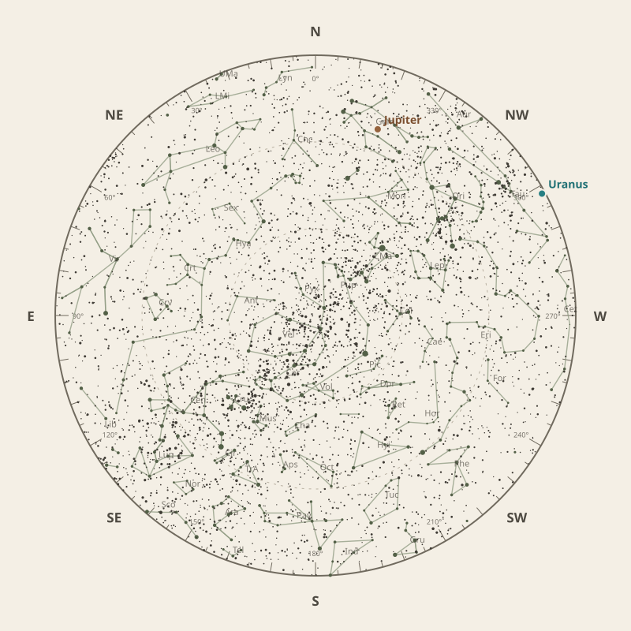

Monthly field almanac
March 2026
Observing reference for Southern Tasmania, Australia.


The month in one sentence · at a glance
Galactic Centre viewing is best on 27 Mar 2026, from 1:29 am to 6:51 am, reaching 76°.
- New Moon
- 19 Mar Darkest skies
- Full Moon
- 4 Mar Brightest skies
- Best dark window
- 23 Mar 10h 58m
Conditions now
Is the sky likely to cooperate?
Checking the sky near Southern Tasmania, Australia…
Find your bearings
The mid-month sky at 10 pm.
Face the matching compass direction and read outward from the centre toward the horizon.

Night planner
Plan the sky for your date.
Choose an observing date to see astronomical darkness, Moon interference, Galactic Centre visibility and the strongest planets.
Best low-Moon dark periods this month
- 7:49 pm–6:47 am10h 58m · 22% Moon
- 7:51 pm–6:45 am10h 55m · 14% Moon
- 7:53 pm–6:44 am10h 52m · 7% Moon
What deserves attention
Top picks for March.
- Milky Way
Milky Way core window
5h 23m with 76° altitude.
- Eclipses
Total lunar eclipse
Visible at maximum; umbral magnitude 1.15.
- Minor planets
Minor planet 7
45° altitude; magnitude 9.5.
- Comets
Comet 43P
53° altitude; magnitude 17.2.
- Planets
Uranus
Best monthly date at 21° altitude.


Moon and darkness
Read the lunar month.
Prefer minimum illumination for faint targets; bright lunar observing belongs near the fullest phase.
Complete lunar data →

Milky Way and deep sky
Recommended core sessions.
- 12:54 am–6:50 am5h 57m · core to 76°
- 12:54 am–6:49 am5h 56m · core to 76°
- 1:03 am–6:48 am5h 45m · core to 76°


Planet visibility
Useful at twilight.
Evening
- Jupiter27 Mar · 8:00 pm24° · Fair
- Uranus1 Mar · 8:30 pm21° · Fair
- Venus27 Mar · 7:30 pm4° · Poor
- Saturn1 Mar · 8:30 pm4° · Poor
- Neptune1 Mar · 8:30 pm3° · Poor
Predawn
- Mercury31 Mar · 7:00 am20° · Fair
- Mars23 Mar · 7:00 am12° · Poor
Other opportunities
Events worth noting.
- Total lunar eclipseVisible at maximum; umbral magnitude 1.15.
- Minor planet 745° altitude; magnitude 9.5.
- Comet 43P53° altitude; magnitude 17.2.


Data and downloads
Need every detail?
2 comet calculations are unavailable; they remain in the data library.
Occultation times use a smooth lunar limb; confirm grazing events with IOTA Occult 4.